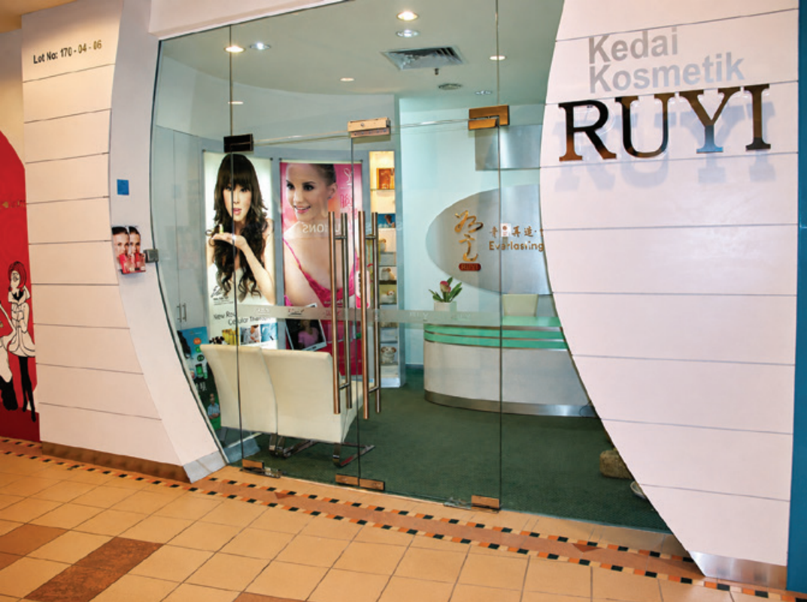
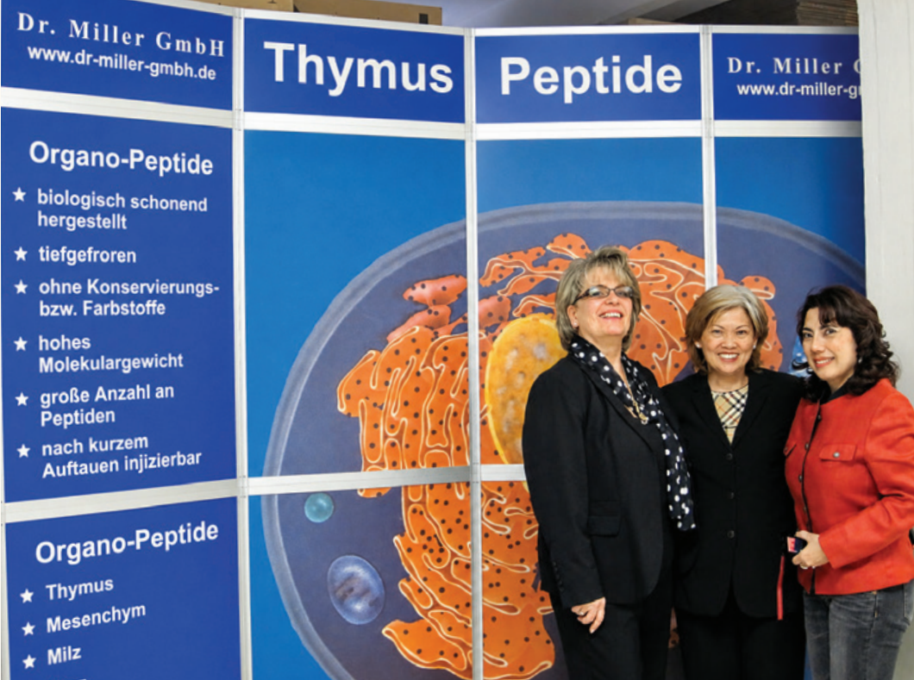
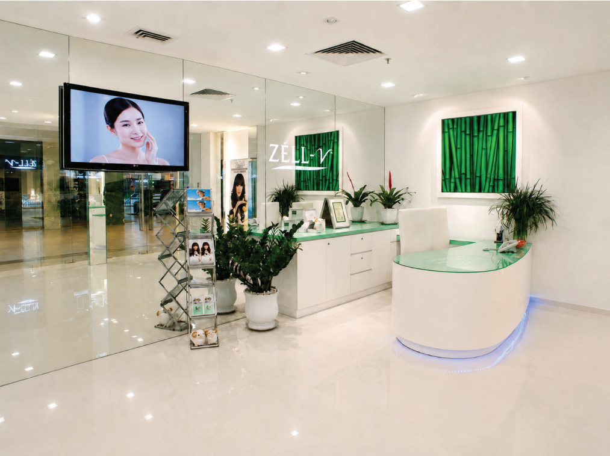
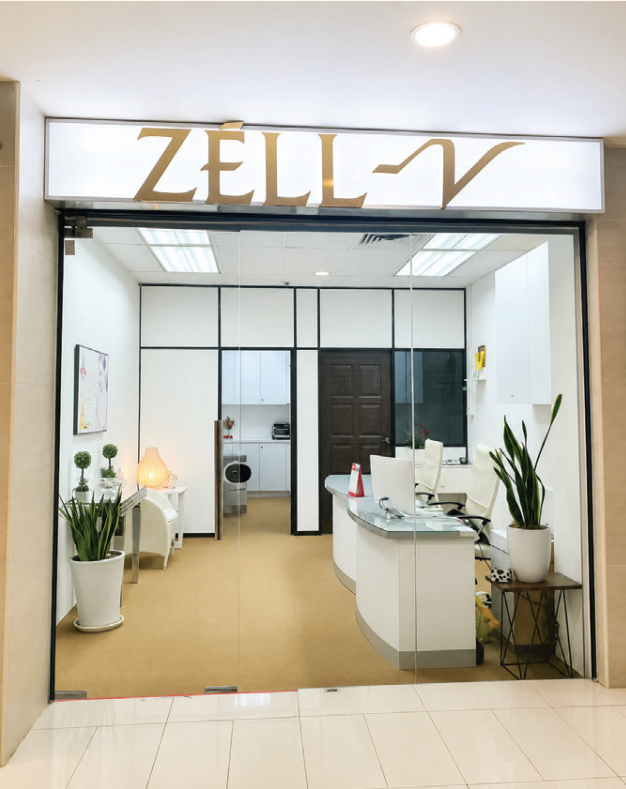
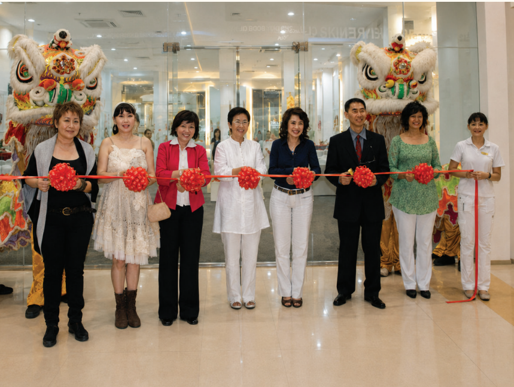
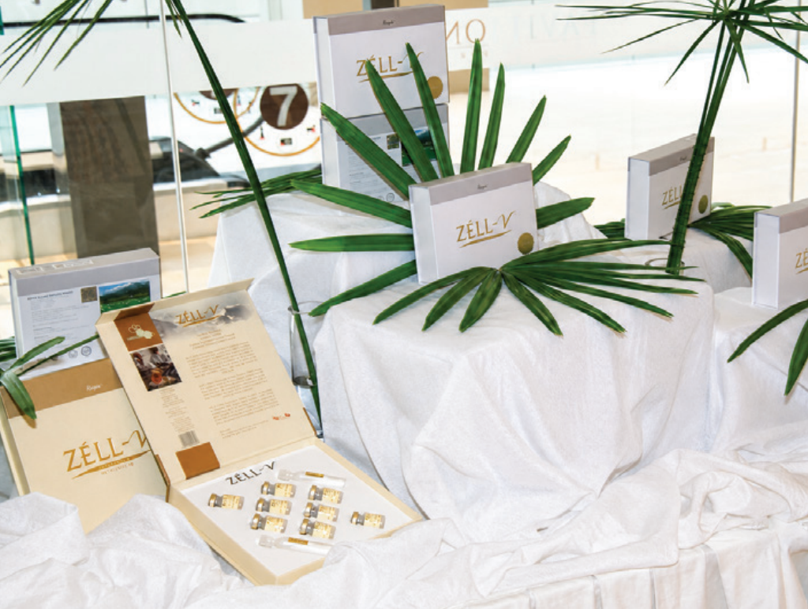

Our Journey
Our Locations
Tap a state to explore
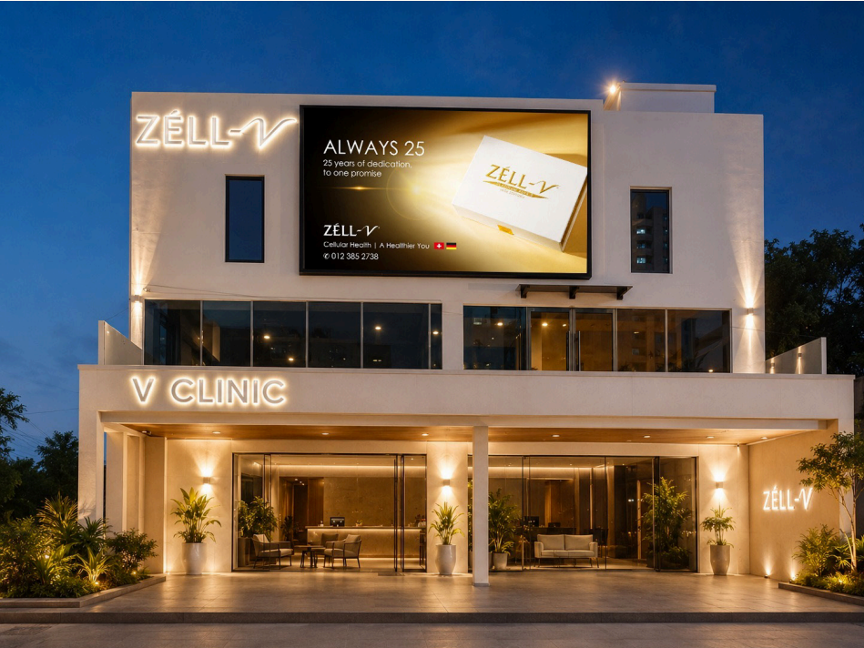
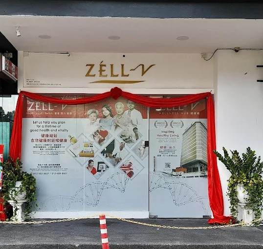
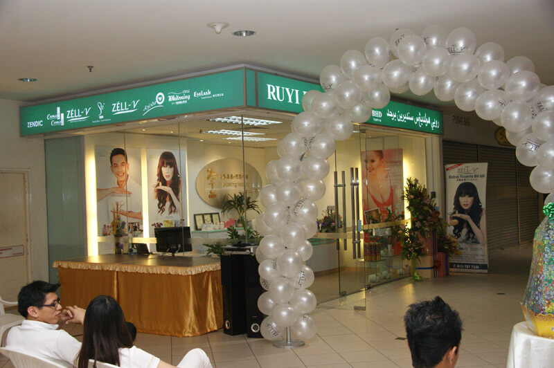
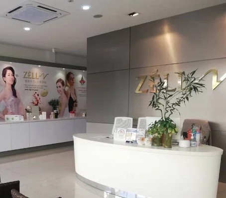
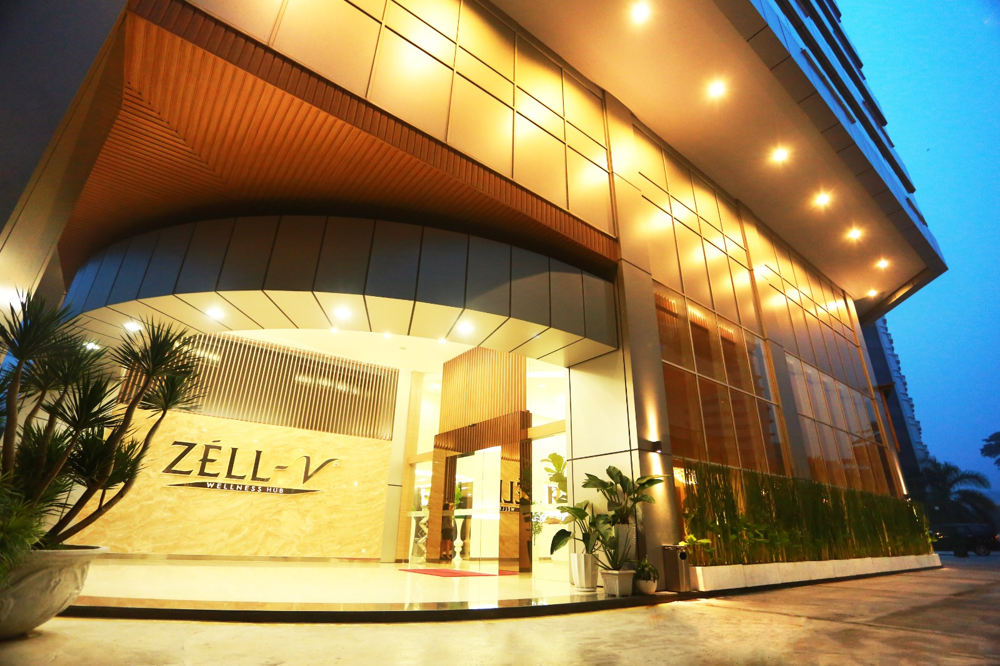
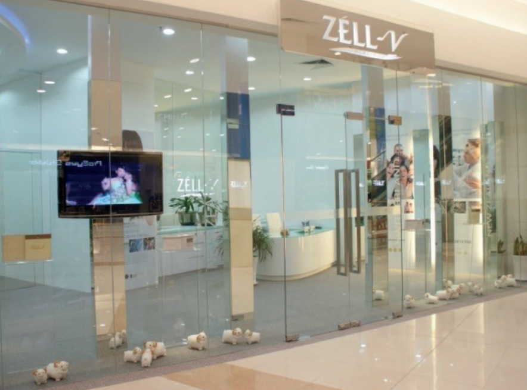
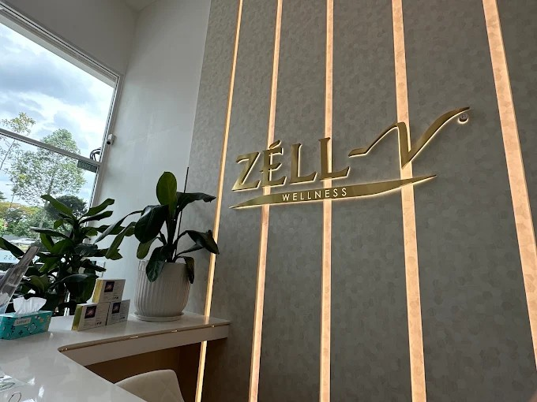
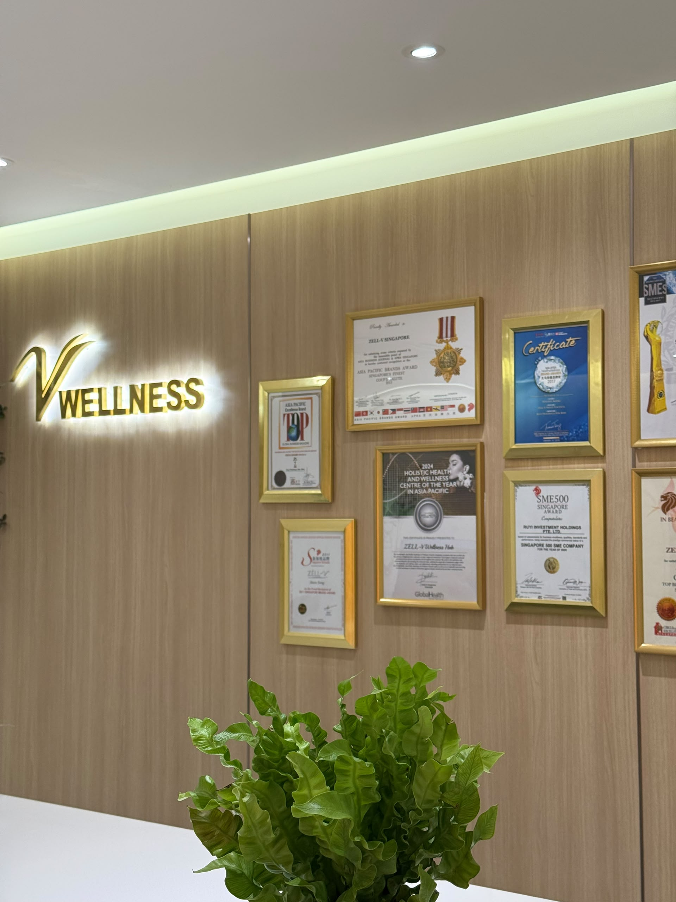

From Beauty to Wellness, From Local to Global.
Beginning with beauty, driven by a mission for health. Moving forward, we integrate advanced technologies, precision health management and professional medical concepts to build a trusted, one-stop Wellness brand.
26 years of staying true to our original aspiration and continuously innovating — all to protect every journey towards health and beauty.
The Beginning of a Dream
SNE Beauty House Was Established
View Story →Brand Transformation
From Representing Brands to Creating Our Own
View Story →Laying the Groundwork
Health Seminars & a New Zealand Site Visit
View Story →Steady Expansion & Continued Growth
The Ipoh & Bukit Mertajam Branches Were Established
View Story →Building on the World Stage
Seminars, a Silver-Screen Moment & a Contract Renewal
View Story →Crossing Borders
New Image Stores in Brunei & Hong Kong
View Story →A New Stage of Growth
A Complete Upgrade at Gurney Plaza
View Story →Brand Upgrade
A New Location in Butterworth
View Story →A New Wellness Home
The ZÉLL-V Wellness Hub Soft Opens
View Story →Going Regional
The Wellness Hub's Grand Opening
View Story →New Products, New Recognition
ZÉLL-V Green & an SMEs Award
View Story →Best in Asia Pacific
A Symposium for Doctors & a Regional Award
View Story →Global Recognition
The Global Health Award & a Cellular Therapy Symposium
View Story →Same Root, Same Dream
A New Melaka Outlet & a Global Gala
View Story →Adapting & Innovating
ZÉLL-V NMN Launches & V-Star Goes Virtual
View Story →Recognition & Regional Ties
The Women Glamour Award & V Wellness's Expansion
View Story →A Landmark Year
The BrandLaureate Award & Johor Bahru's New Wellness Hub
View Story →Expanding Horizons
A Cambodia Launch & a New Product Line
View Story →A New Era of Wellness
Penang Wellness Was Officially Established
View Story →The Beginning of a Dream
SNE Beauty House Was Established
It all began with a passion for beauty.
The founder established SNE Beauty House in Bukit Jambul, Penang, beginning her entrepreneurial journey by providing professional beauty services, including slimming, bust enhancement, body-shaping lingerie and eyelash services.
The company also represented several international beauty brands, including MFII, Natural Push Up and Lanni Jojoba Oil.
In the early days, the team consisted of only two members. Yet, with an unwavering commitment to professionalism, integrity and attentive service, they earned the trust of their customers one step at a time, laying a strong foundation for the brand's future development.
Brand Transformation
From Representing Brands to Creating Our Own
The brand was officially upgraded to Ruyi and relocated to Gurney Plaza, marking the beginning of a new chapter.
The founder has always believed:
"Do not simply represent other people's brands. Create a brand of your own."
Guided by this belief, she travelled extensively around the world to learn about advanced international technologies and health management concepts, and subsequently established several proprietary brands:
• Zéll-V • NPU • BeJojoba
At the same time, advanced sub-health screening technology was introduced, leading the brand beyond traditional beauty services and into science-based health management, opening a new direction for its development.
Laying the Groundwork
Health Seminars & the New Zealand Site Visit
Through 2008, the brand entered its formative phase — hosting health seminars to build public trust in its approach, while the founder travelled to New Zealand to study advanced cellular and wellness technologies at their source, laying the technical groundwork for what would soon become ZÉLL-V.

Steady Expansion & Continued Growth
Steady Expansion
The Ipoh Branch Was Established
The brand took its first step towards regional expansion, bringing its professional beauty services and health management philosophy to more cities, allowing more people to experience professional and comprehensive care.
That same year, the brand hosted a medical seminar at The Westin Kuala Lumpur and introduced cell-check services for the first time, while Elaine Kang signed on as brand ambassador — part of a packed year that also saw participation in numerous medical trade shows.
Continued Growth
The Bukit Mertajam Branch Was Established
As the brand continued to grow, its service network expanded and the team grew stronger, allowing more customers to experience professional, reliable and thoughtful health and beauty services.
2010 also saw Malaysian superstar Rosyam Nor sign on as brand ambassador, the launch of the first V-Star Star Search, and the opening of the ZÉLL-V International Headquarters at Marina Bay Sands, Singapore — alongside a medical seminar at the Penang Shangri-La Hotel.
Building on the World Stage
Seminars, a Silver-Screen Moment & a Contract Renewal
2011 saw the brand deepen its regional presence — hosting a delegation of German medical specialists and staging a customer experience event in Kuala Lumpur, while its products even featured on the silver screen in the Singapore film "We Not Naughty," shot at Marina Bay Sands.
Elaine Kang renewed her contract as brand ambassador, and the year closed with the 2nd V-Star Star Search and a string of public health and medical seminars across Singapore, Hong Kong and Malaysia.

Crossing Borders
New Image Stores in Brunei & Hong Kong
The brand's international footprint grew further in 2012 with the opening of new ZÉLL-V image stores in Brunei and Hong Kong, alongside large-scale mall promotions across Malaysia and the 3rd V-Star Star Search.
A 15-storey ZÉLL-V building in Seputeh was signed, and from September to December the brand ran its "On-The-Go" nationwide health tour, carrying its wellness message across the country.

A New Stage of Growth
A Complete Upgrade at Gurney Plaza
As the number of customers continued to increase, the Gurney Plaza branch expanded from approximately 480 square feet to approximately 2,000 square feet.
This represented more than an expansion of space. It symbolised the growing strength of the brand and the market's strong recognition of Ruyi, while also reflecting the founder's spirit of continuous innovation and her determination to keep moving beyond boundaries.
The year also brought the honour of hosting the First Lady of Mozambique, the 4th V-Star Star Search, a Resource Integration Seminar, and the launch of ZÉLL-V Rosemato — alongside the opening of the ZÉLL-V Gurney Plaza image store and a new image store in Vietnam.
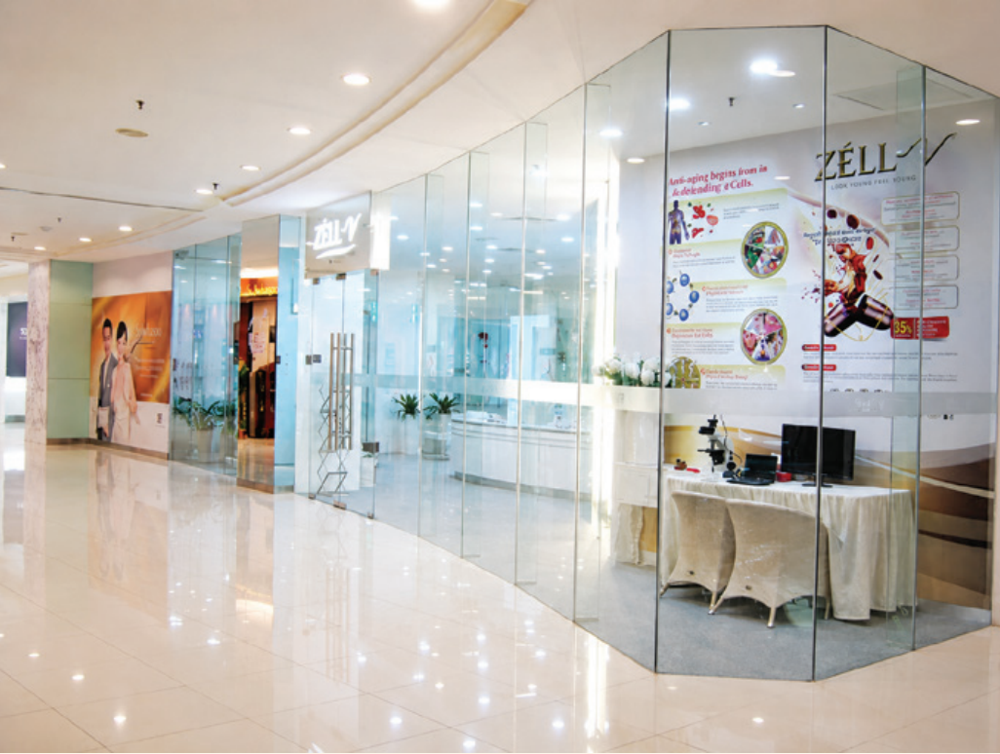
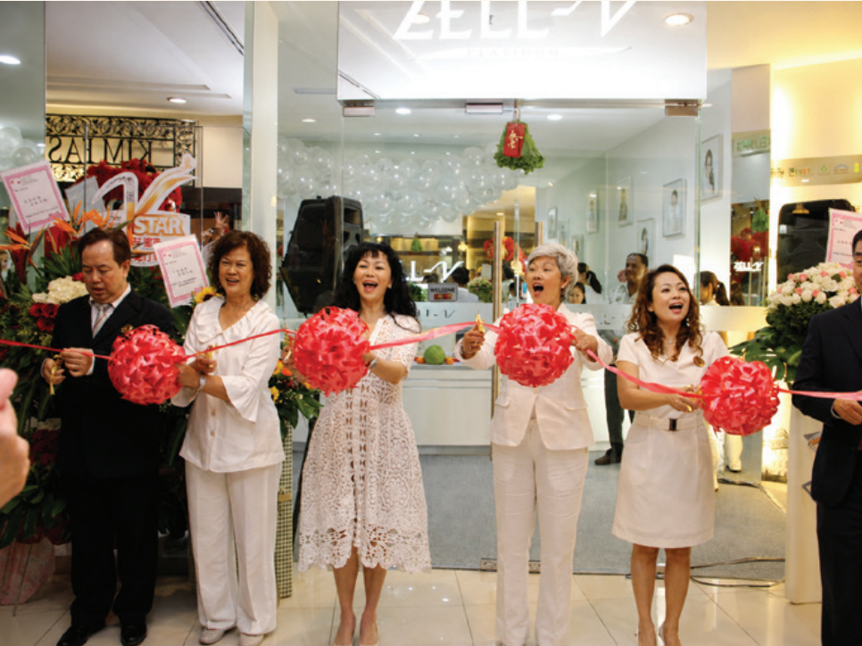
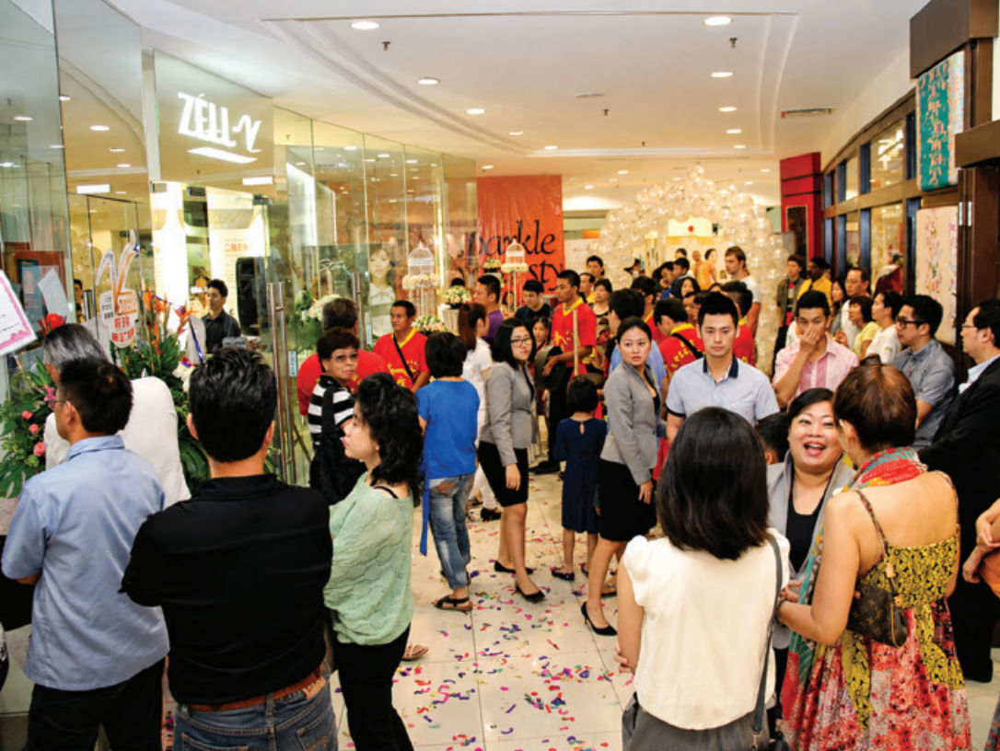
Brand Upgrade
A New Location in Butterworth
The Bukit Mertajam branch officially relocated to a prime location in Butterworth, with comprehensive upgrades to its service environment, professional equipment and brand image, establishing a stronger foundation for the brand's future development.
2014 also saw Sharon Chan sign on as international spokesperson, the 5th V-Star Star Search, and the launch of ZÉLL-V Phytogreen in Singapore, as extensive renovations began on the brand's Kuala Lumpur headquarters.
The brand was honoured with the Sin Chew Business Excellence Award and the Malaysian Franchise Association's Most Influential Franchise Award, was featured on China's Xinhua Net, and closed the year with its "My ZÉLL-V, My Life" annual dinner.
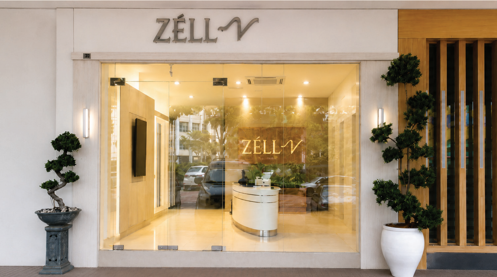
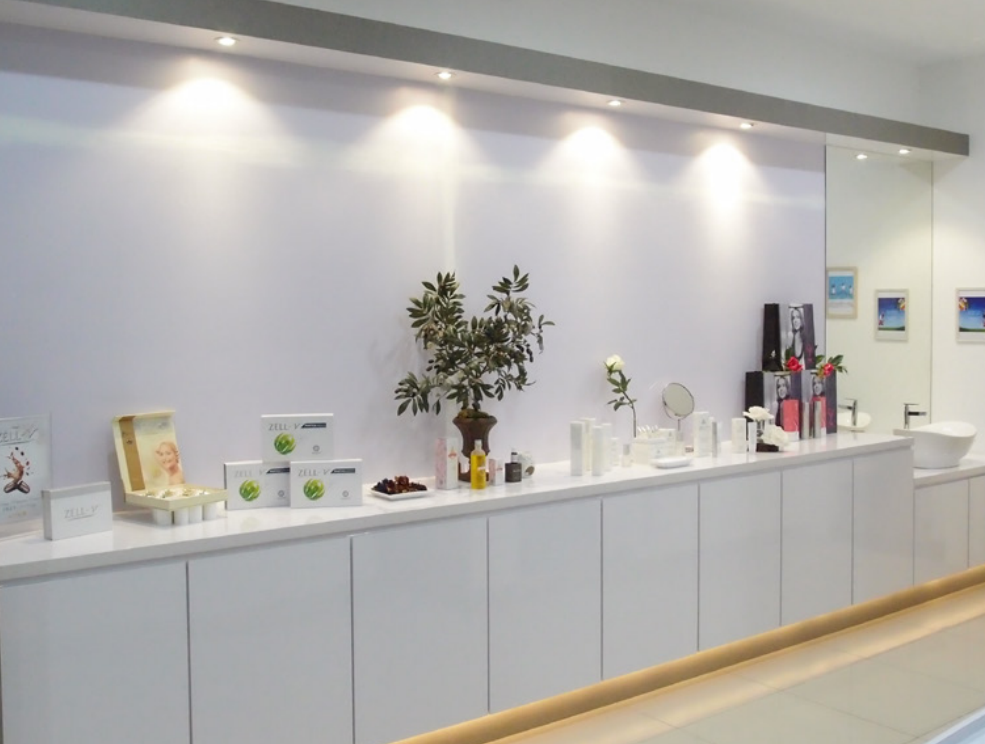
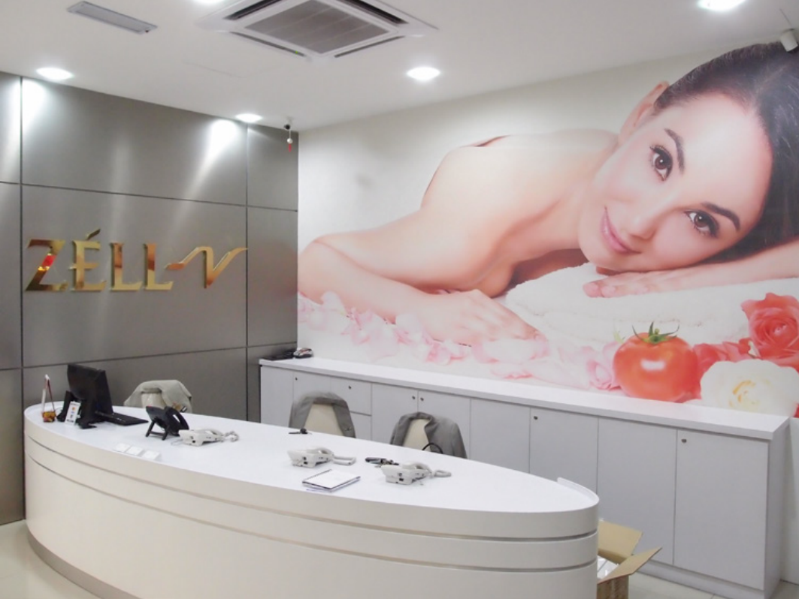
A New Wellness Home
The ZÉLL-V Wellness Hub Soft Opens
2015 marked the soft opening of the ZÉLL-V Wellness Hub, alongside the brand's 6th anniversary celebration in Singapore.
Sora Ma signed on as brand ambassador, appearing alongside Rosyam Nor at a joint press conference, as the brand's international presence grew further with an appearance at the Shanghai Expo.

Going Regional
The Wellness Hub's Grand Opening
The ZÉLL-V Wellness Hub held its official grand opening in 2016, a year that also saw the brand's regional presence surge — from the 6th V-Star Star Search to an appearance on NTV7's Living Delight Show.
The brand carried its message across borders with medical seminars and exhibition booths in Chengdu, Jakarta, Myanmar and the Arab Health Exhibition, culminating in the opening of ZÉLL-V Chengdu.

New Products, New Recognition
ZÉLL-V Green & an SMEs Award
2017 brought the launch of ZÉLL-V Green and the ZÉLL-V 30000mg product in Vietnam, along with an SMEs Award for the ZÉLL-V product brand.
The year was rounded out with medical symposiums in Malaysia and Germany, and participation in the INTAAC International Anti-Ageing Conference in Jakarta.

Best in Asia Pacific
A Symposium for Doctors & a Regional Award
2018 saw ZÉLL-V host a symposium for doctors in Singapore, an MRCA CEO Night, an international seminar, and the 7th V-Star Star Search.
The year was capped off by the brand being named Best Wellness and Holistic Provider of the Year in Asia Pacific by Global Health & Travel.

Global Recognition
The Global Health Award & a Cellular Therapy Symposium
Global recognition continued in 2019 with the Global Health Award, alongside a cellular therapy symposium and a "Reprogramming Your Cells" talk in Kuala Lumpur.
The ZÉLL-V Wellness Hub welcomed notable visitors that year, including Mrs Singapore pageant finalists and artiste Yasmin Hani.

Same Root, Same Dream
A New Melaka Outlet & a Global Gala
2020 opened with the launch of the brand's "Same Root, Same Dream" Global Chinese New Year Gala and the opening of a new ZÉLL-V outlet in Melaka.
Mrs Singapore contestants also paid a visit to the ZÉLL-V Ngee Ann outlet, continuing the brand's close ties with the region's beauty and wellness community.

Adapting & Innovating
ZÉLL-V NMN Launches & V-Star Goes Virtual
2021 saw the launch of the ZÉLL-V NMN product, alongside a virtual medical symposium and the brand's V-Star Star Search moving online — adapting to a changed world while continuing to innovate.

Recognition & Regional Ties
The Women Glamour Award & V Wellness's Expansion
The brand was honoured at the Women Glamour Award Ceremony in 2022, marked the opening of V Wellness's business expansion, and renewed its Vietnam distributor contract following an authorised distributor certificate presentation in Cambodia.
The year also brought the 8th V-Star Star Search, further activities in Vietnam, an interview with Dato' Sharon by Britishpedia, and the Majlis Datuk & Dato' Malaysia dinner at One World Hotel.

A Landmark Year
The BrandLaureate Award & Johor Bahru's New Wellness Hub
2023 was a landmark year — the brand was honoured with the BrandLaureate Award, celebrated ZÉLL-V Vietnam's 10th anniversary, and opened both a ZÉLL-V Wellness Hub and a V Wellness outlet in Johor Bahru.
The brand hosted the ZÉLL-V International Cellular Therapy Symposium, welcomed a corporate visit from the 2023 ASEAN Entrepreneurs Elite Summit and Mrs Singapore pageant finalists, and conducted site inspections in both New Zealand and the United States.

Expanding Horizons
A Cambodia Launch & a New Product Line
2024 opened with the brand's launch in Cambodia and the debut of the ZÉLL-V Platinum Plus 3 product, followed by the HK Star Charity Concert at ICC Pudu.
The ZÉLL-V Wellness Hub and Ngee Ann outlet welcomed a series of notable visitors that year, including PUMM and Mrs Singapore pageant finalists and contestants.

A New Era of Wellness
Penang Wellness Was Officially Established
The Butterworth and Gurney branches were officially integrated to establish Penang Wellness, marking a new milestone in the brand's journey.
This represents the culmination of the founder's twenty-six years of continuous learning, ongoing innovation and courage to break new ground.
From a small beauty salon in Bukit Jambul to today's one-stop health centre integrating Wellness, precision health management and regenerative medicine, every step of the journey has been shaped by perseverance, conviction and vision.
Today, we not only help our customers pursue beauty, but also hope to accompany every individual towards a healthier, more youthful and vibrant life.


Steady Expansion
The Ipoh Outlet Opens — 2009
In 2009, as Ruyi took its first step beyond Penang, the Ipoh outlet opened its doors — bringing the brand's professional beauty and health management services to the people of Perak for the very first time.

Reaching Further East
The Kuantan Outlet Opens — 2009
The same year, Ruyi carried that expansion further east, opening its Kuantan outlet and extending its reach into Pahang — part of a wider push that saw the brand exhibit at more than 20 trade shows between August and December 2009 alone.

Where It All Began
Ruyi Holdings Founded at KL Plaza — 2007
Kuala Lumpur has been part of the brand's story from the very beginning — Ruyi Holdings Sdn Bhd was established at KL Plaza in 2007, the same year its first medical seminar, "Young Again," was hosted at The Westin Kuala Lumpur.

Taking to the Road
First ZÉLL-V Roadshow at Pavilion KL — 2009
A further medical seminar was held at The Westin, alongside the brand's first-ever roadshow at Pavilion KL — bringing ZÉLL-V directly to shoppers in the heart of the city.
A Home of Our Own
Wisma Ruyi Inaugurated at Pudu — 2010
2010 brought the grand inauguration of Wisma Ruyi at Pudu — the company's own headquarters building, and a permanent home for the brand in the city where it all began.
Closer to Customers
A Customer Experience Event — 2011
Kuala Lumpur hosted a customer experience event in 2011, bringing the brand closer to its growing community of loyal customers in the capital.
A New Storefront
Be+ Pavilion KL Opens — 2012
The opening of the Be+ Pavilion KL store extended the brand's presence within one of the city's most prominent shopping destinations.
Investing in Home
Headquarters Renovations Begin — 2014
Extensive renovations began on the ZÉLL-V headquarters in 2014 — a continued investment in the city that started it all.
Reprogramming Cells, Reimagining Wellness
The "Reprogramming Your Cells" Talk — 2019
In 2019, Kuala Lumpur hosted the brand's "Reprogramming Your Cells" talk — sharing the science behind ZÉLL-V's cellular therapy approach with the capital's health-conscious community, part of a year of global recognition for the brand.
A New Frontier South
The Johor Outlet Opens — 2010
2010 marked a landmark year for the brand — the international headquarters opened at Marina Bay Sands, Singapore, and on home ground, a new ZÉLL-V store opened at KLS City, Johor, bringing the brand's services to the southern peninsula for the first time.

A Wellness Destination
ZÉLL-V Wellness Hub & V Wellness Open in Johor Bahru — 2023
In 2023, Johor Bahru welcomed both a new ZÉLL-V Wellness Hub and a V Wellness outlet — expanding the brand's presence in the state beyond its original KLS City store and establishing Johor Bahru as a growing wellness destination.
Growing the Network
The Melaka Outlet Opens — 2010
That same year, ZÉLL-V opened its doors at Aeon Bandaraya, Melaka — one of five new stores launched across Malaysia in 2010 as the brand's presence continued to grow nationwide.

A Second Chapter
A New ZÉLL-V Outlet Opens — 2020
A decade after its first Melaka store, ZÉLL-V opened a new outlet in the state in 2020 — part of a year that also saw the brand's "Same Root, Same Dream" Global Chinese New Year Gala.
Extending North
The Kelantan Outlet Opens — 2010
Further north, a new ZÉLL-V store opened at Kb Mall, Kelantan, part of the brand's 2010 wave of expansion that also reached Johor, Melaka, Penang and Selangor within the same year.